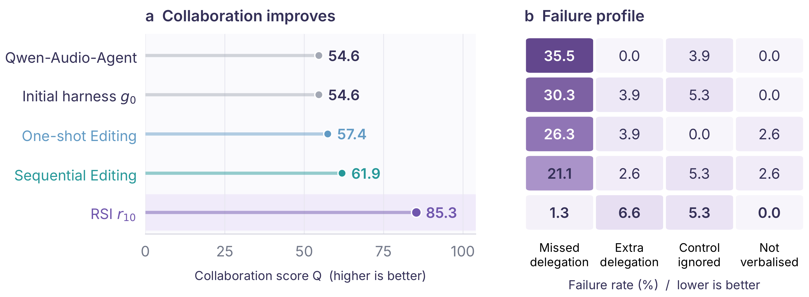

Policy
Answer, delegate, or task control
Instructions, the delegation schema, and routing examples.
Full-duplex voice agent collaboration
Recursive harness improvement for full-duplex voice agent collaboration
A full-duplex model stays on the live channel, while search, reasoning, and coding are delegated asynchronously. DuplexAgent writes that coordination as six editable modules. Duplex-Harness-RSI revises them from timed conversations whose failures name which module to repair: the Exam Planner selects the next tests from observed weaknesses and the repair archive, and the Harness Editor proposes the change. The loop outperforms the initial harness and repeated editing without that diagnosis, while spoken knowledge and executable tool use improve and interruption response stays strong.
* The Chinese University of Hong Kong, Shenzhen † Amphion Technology
01 Demo
The demo shows collaboration with two interaction models, NVIDIA VoiceChat and Qwen-Realtime. While delegated work is running, the conversation stays live. The user can interrupt, cancel, or revise the task at any time, and can keep discussing and revising a long-horizon task.
02 Overview
DuplexAgent is a full-duplex collaboration system. The interaction model remains the conversational entry, and a delegation pool of reasoning LLMs and coding agents carries search, reasoning, and coding. Their exchange is written as six editable modules: Policy, Intake, Hold, Worker, Deliver, and Memory. The harness decides what is accepted, which task is current, and when a result may be spoken.
Duplex-Harness-RSI revises that harness and leaves the attached models fixed. Separating the modules gives each failure a place to investigate. A reasoning LLM from the same pool is the Exam Planner: it reads attributed failures and the repair archive, then chooses the next exam. A coding agent from the same pool is the Harness Editor and changes the modules the diagnosis names. Paired checks tie each revision to the conversation, so the capabilities that serve the user also improve the harness.

03 Harness
We divide the collaboration path into six modules. A failure can then be attributed to the responsible module, and the repair targets that module. Policy and Intake decide what the user is asking and which live task it concerns. Hold and Deliver protect the conversational rhythm: what the user hears while work is pending, and when a result may be spoken. Worker hands the job to a delegate. Memory keeps the context shared by the conversation and the background work.
Instructions, the delegation schema, and routing examples.
Parsing, control cues, task relations, and resolution rules.
Receipts, progress timing, and control replies.
Routing, task instructions, result schemas, and executable overrides.
The speaking window, waiting, and success or failure rendering.
Turn assembly, retention, compaction, and reset recovery.
04 A live session
The user asks for a Snake game. A coding agent builds it asynchronously, while the interaction model stays in the conversation. Because the channel is full-duplex, the user can interrupt, cancel, or switch tasks at any moment: here they cancel Snake and ask for Tetris before the first task has finished. The six modules carry that path together.

Policy decides that building the game should be delegated. Memory retains the goal.
Intake opens the task. Hold acknowledges it. Worker sends the request and the relevant context to a coding agent.
The user cancels Snake and asks for Tetris. Intake resolves the cancellation and the replacement against the ledger. Memory updates the context. Hold acknowledges the change.
Snake comes back after it has been replaced. The result is recorded, but it cannot be delivered, and it cannot make Snake current again.
When Tetris is ready, Deliver waits for a speaking window and returns that result through the interaction model. The six modules cooperate over time, rather than acting as independent stages.
05 Simulator
A request type fixes the capability and the allowed route. An interaction pattern fixes what happens while that request is in flight: refinement, cancellation, overlap, delay. Wording and audio change only after the expected behaviour is fixed, so a failure still points at a module.

06 Results
DuplexAgent leads the other collaboration systems on all three capabilities, and those systems use the same delegation LLM. Spoken knowledge is measured by MMSU, executable tool use by BFCL parallel-multiple and FDB-v3 Pass@1, and duplex timing by FDB-v1 interrupt takeover. On a fixed attachment it also scores above the interaction model alone and above Qwen-Audio-Agent. A direct question stays a spoken answer. A tool request stays an executable call, with its arguments passed through rather than replaced by a title.


07 Duplex-Harness-RSI
Duplex-Harness-RSI improves the harness on its own, and the gain is large. On the same VoiceChat exams it clearly outperforms the initial harness, a single pooled revision, and ten revisions that replay those exams without using what earlier rounds learned. Each round starts from the harness already kept, finds the failures that remain, and edits the module responsible. A change stays only when the checks support it, so the next round can build on a better harness. Performance keeps rising. The clearest gain is that the system now takes on the delegated work it used to miss.
The same self-improvement holds on Qwen-Realtime. Retained versions steadily raise the collaboration score. Each kept version is stronger than the one before it, so the loop can continue to improve the harness rather than stop after one edit.


These are the repairs the loop kept. Each one fixes the failure a round found, and together they raise the harness from the version the campaign started with.
| Module | Rule before repair | Rule after repair | Recorded local evidence |
|---|---|---|---|
| Policy† | Conversational and familiar-fact turns are routed too broadly. | State the direct-answer categories explicitly, while still delegating requests that need additional capability. | Extra calls reduced by 50%. |
| Intake* | A late cancellation can be treated as work that has already completed. | Resolve the cancellation against live task state, and apply the same control handling to replacement preambles. | Ignored cancellations reduced by 81%. Replacements reduced by 65%, then by 83.3%. |
| Hold† | Pending work does not receive a timely progress update. | Report progress earlier, and keep receipts brief and compatible with the adapter. | Missing progress updates reduced by 75%. |
| Worker* | Conversions skip the required calculation, or reformulate output that was already verified. | Preserve the requested units and precision, calculate when the request requires it, and retain verified result content. | Wrong answers reduced by 66.7%. |
| Deliver* | Completion can start speech during the user’s turn, and an inability to execute is reported as success. | Speak only once the user is silent, and distinguish unsuccessful execution from a successful answer. | Overlaps reduced by 100% on both attachments. Concealed failures reduced by 100%. |
| Memory* | Delegation is correct, but the delegate receives an incomplete question or missing context. | Assemble the complete user turn, and retain the context that a delegated request needs. | Missing-context failures reduced by 60%. |
* VoiceChat † Qwen-Realtime
Citation
Citation details will be updated if the report is released as a preprint.
@misc{shen2026duplexagent,
title = {DuplexAgent-RSI: Recursive Harness Improvement for Full-Duplex Voice Agent Collaboration},
author = {Shen, Yingda and Wang, Yuxiang and Feng, Kunyu and Ni, Qinke and Li, Jiaqi and Hsu, Minghao and Zhang, Junan and Chen, Dekun and Bian, Yutong and Wu, Zhizheng},
year = {2026},
note = {Technical report}
}